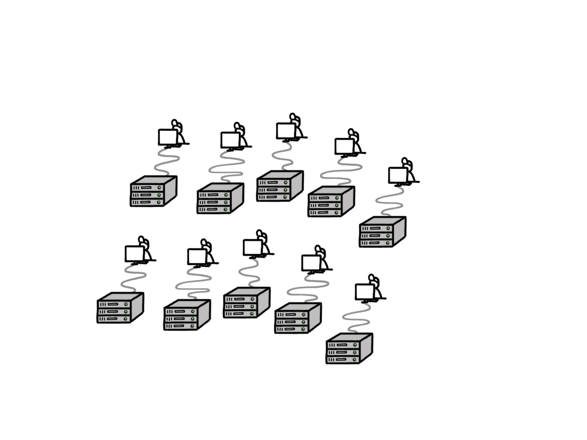

Self Contained Images

Ecosystem

Agenda
- Docker@ICTU
- Demo
- Workshop/brainstormsessie
Hoe het begon
Met Docker
Tooling

Met Docker

Docker as a Service
- Interface voor Docker Cluster
- Gebaseerd op Docker Compose
Discovery as a Service
Application as a Service
- Application = { gelinkte containers }
- Dashboard voor Starten/Stoppen
- API voor applicatie creatie